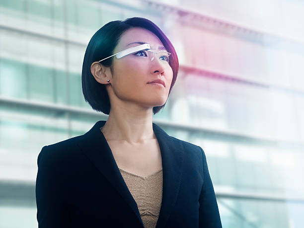

Welcome to Trends
- Wearable Technology: As our dependence on digital technology grows
the need for perpetual access to technology grows in kind. To accomodate this
trends, many big tech companies are make the move toward wearable technology.
Examples include Google Glass and the Apple Watch. Wearing such devices means
that use is not prompted by need, but rather is perpetual and constant. Many experts
have raised concers about the dangers this may pose to individuals and society at large.

- Computer Oriented society: As we have seen with wearable technology,
computation is occupying a growing role in modern life. The concept of wearable
technology tells demonstrates that many are embracing this trend. For centuries,
businesses have operated without the use of computation. Today it is necessary
to rely on up-to-date software and technology not only to ensure competitive
efficiency, but simply to function. Companies which refuse to use modern computing
are unable to promote thier businesses online, use modern administration tools
and process digital paiments. While becoming computer oriented has made many things more efficient, it has also in a way forced itself upon many.
- Privacy Risks: Online communication and service are seen as extremely
useful by many. The use of these often requires user information, name, email,
banking information. We often distibute these quite freely because of the convenience,
not considering the huge risk we bring upon ourselves. If not treated with care,
these could be used to access private information resulting in potentially devastiating
consequences which may include banking fraud and identity theft. Click here for more information on online privacy
Image Sources:
- Watanabe, Hiroshi. Businesswoman wearing a PC with head-mounted displ - stock photo. 17 Feb. 2014. Getty Images, Getty Images, https://media.gettyimages.com/id/470313583/photo/businesswoman-wearing-a-pc-with-head-mounted-displ.jpg?s=1024x1024&w=gi&k=20&c=iw-AGLQ8HiSCDIKJ1z0KRPWndEJO3SERyN4zbrbOoUc=. Accessed 29 Jan. 2025.
- Detraphiphat, Krisanapong. Hacker. 21 Sept. 2021. Getty Images, Getty Images, https://imgs.search.brave.com/nWbo9-I4z7hwksyfpTeYnyb7eIEfHdO6v2Iregzs1YQ/rs:fit:860:0:0:0/g:ce/aHR0cHM6Ly9tZWRp/YS5nZXR0eWltYWdl/cy5jb20vaWQvMTM0/MTQxMTI5MC9waG90/by9oYWNrZXIuanBn/P3M9NjEyeDYxMiZ3/PTAmaz0yMCZjPUdw/dVlVVk1HUlFISVV3/TWRDSTItZy1JTl9o/T2VMMU85Zk1sUDZj/M05VaFU9. Accessed 29 Jan. 2025.
A LINK TO Home